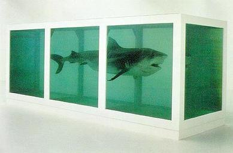

The Physical Impossibility of Death in the Mind of Someone Living
Damien Hirst · 1991 · Tiger shark, glass, steel, 5% formaldehyde solution · 213 × 518 × 213 cm · Private collection
In copyright. Look and learn: shown for study, not for download.
Charles Saatchi had offered in 1991 to pay for whatever Hirst wanted to make, and Hirst was in his mid-twenties. The tiger shark was caught off Hervey Bay in Queensland by a fisherman hired for the job; it cost 6,000 pounds and the whole work 50,000. When it was first shown at the Saatchi Gallery in London in 1992, The Sun's headline read 50,000 pounds for fish without chips. The original shark, 14 feet long, deteriorated and was replaced with a new one in 2006, two years after Saatchi sold the work to Steven A. Cohen.